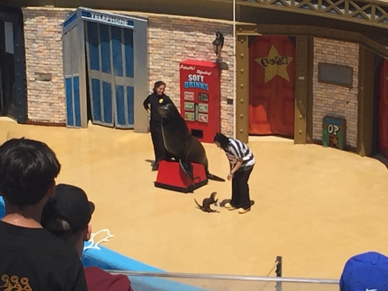
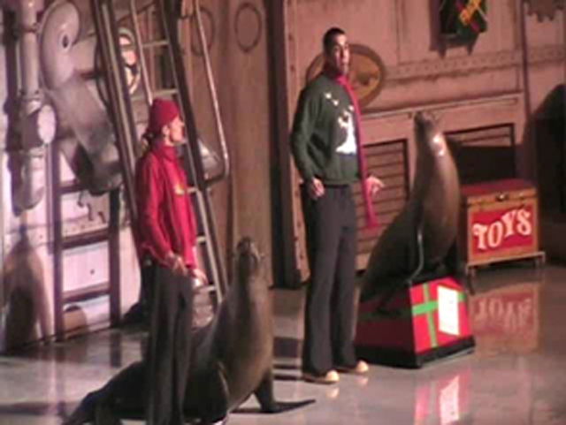

| |
Top 10 Theme Park Shows

Welcome to an Incrediblecoasters Top 10 List. When we list stuff, we actually explain why. Theme Park Shows. They may not be the main reason why most people go to amusement parks, but lots of people expect shows when they go to amusement parks. Ok, now many amusement parks do not have any shows. Six Flags Parks and Cedar Fair Parks are not exactly well known for their shows, they are mostly known for their roller coasters, but even they get into the show buisness. Now of course, they aren't amazing shows or anything, but they do offer shows. Usually, they'll have a quick show from time to time and then replace it with another easy show. They're usually fun and all, but they don't act like they're shows are of Disney quality, because they're not. And speaking of Disney, People expect HIGH QUALITY shows from them. And I mean HIGH QUALITY shows. And Disney does deliver (Here's a hint. You'll be seeing A LOT of Disney coming up). People know the Disney shows, and they will LINE up to see them. Good luck getting through Frointeirland or New Orleans Square around 9:30 PM at Disneyland. You won't be able to move due to crowds seeing Fantasmic, and just leaving after the Main Street Fireworks is hell. Hell, you need a freaking fastpass to see World of Color. But people put up with it because they know that these are awesome shows and that it'll be worth it in the end. But which shows are worth putting up with crowds from hell? This Top 10 List is here to answer that question. Lets dive right in.
 
#10.

The Finding Nemo Musical @
Walt Disney World Resort
Lake Buena Vista, Florida, U.S.A
Now for the most part, this is just an ordinary musical. Nothing too amazing or specatular, but as always, Disney World does a fantastic job performing this Finding Nemo Musical. The musical is about Finding Nemo, but you probably already knew that due to the title. And if you didn't, God you're a f*cking idiot. But as mentioned before, this is a Musical, and Finding Nemo is not a musical movie. I don't think there are any songs in the movie, and if there are, they must really suck since I can't remember any of them. So, they had to create all of these songs from scratch. And while you can tell that these are totally forced songs written only for the musical (It happens all the time), they aren't bad songs. They aren't amazing or anything, but I didn't cover my ears and bitch about how bad they were, so that means they weren't bad. Now, another interesting fact about the show is that you not only see the puppets, but you can always see the actors who are working the puppets. But its not distracting, you just get used to them. And they really do help bring the characters to life. Decent Songs, Good Acting, and a Very Good Story, the Finding Nemo Musical is great for anyone visiting the Animal Kingdom in the Walt Disney World Resort. The Finding Nemo Musical. Musicals are much better Under the Sea!!!! (Oops, Wrong Disney Movie).
#9.

The Clyde & Seamore Show @
Sea World San Diego
San Diego, California, U.S.A
Located at Sea World San Diego, the Clyde & Seamore Show is a show involving a bunch of animals doing tricks. Yeah, PETA doesn't like this. But who cares about what a hypocritical group that supports eco-terrorism and kills animals has to say about these shows. They are awesome, and this is another one of Sea World's shows. I will admit that I used to rank this show higher and liked it more in the past. But I think that's not a matter of the show decling in quality and more of the fact that this show is full of corny dad jokes and me not being as amused by them as I got older. But dad jokes aside, they did a lot of fun tricks in the show that everyone could enjoy. DEFINETLY check it out. It's a lot of fun and the best animal show in Sea World.

#8.

Waterworld @
Universal Studios Hollywood
Universal City, California, U.S.A
While this show may be well known, it certainly isn't famous like the Clyde & Seymour Show or any of the Disney Shows. But I really like the Water World show. The movie may suck, but I do enjoy this show. Its just such a fun show with some decent effects. I enjoy the fact that people splash random people in the audience with water, the story seems decent, and of course the plane landing in the water is always cool. I think, the show works much better than the movie because the show just seems to get to the point whereas the movie just drags and it gets lame pretty quickly. Yeah, this show is pretty cheesy, but I like it. Its a fun show and.....it's gone. Well.....hopefully something cool comes in and takes its place.
 
#7.

The Shamu Show @
Sea World San Diego
San Diego, California, U.S.A
*gasp* A show not from a Disney Park on a Top 10 Show List!! The Apocalypse is coming!! EVERYONE PANIC!!!! But this really shouldn't come as too much of a surprise, because the Shamu Show is about as famous as the shows at the Disney Parks. I know the show has gotten a lot of unfair criticism, and at this point, I've complained to death about that bullsh*t documentary. But just in case you're new, read this. Anyways, you all know what the Shamu Show is (regardless of whether you like it or not). Shamu is the whale that does a bunch of cool tricks. He's practically the main reason anybody knows about Sea World at all. And the fact that Shamu isn't doing the show anymore thanks to these jackasses, GAH!!!!. The Orca Encounter they replaced it with is also pretty cool and great if you want to know more about orcas. But....the whole appeasing these assholes thing does make me angry. Anyways, he had a a pretty damn good show. Well, at least the Christmas Shamu Special was pretty good. I never saw the regular Shamu Show, so this is all based on the Christmas Special. =( The tricks themselves are pretty good, and people go ga-ga over them. Hell, Shamu is so cool that several parks have their own copycat shows to piggyback on their success. But yeah. Cool Tricks from a Cool Whale. Shamu knows what he's doing. Shamu. He's so cool that he's got his own copycats.
#6.

The Aladdin Show @
Disneyland Resort
Anaheim, California, U.S.A
All right. We're back to the Disney Parks, and we're back with another musical from a Disney Movie. Except now this time, we're doing Aladdin instead of Finding Nemo. And yeah. There are definetly some advantages that the Aladdin Musical had over the Finding Nemo Musical. Well first off, Aladdin actually is a musical movie, so they don't need to create any songs. They just used all the ones they have for the movie such as One Jump Ahead, Never Had a Friend Like Me, Prince Ali, and A Whole New World. All of these are good and memorable songs which work very well in the musical, whereas I don't remember a single song from the Finding Nemo Musical. They also did a fantastic job of converting Aladdin from a movie to a musical. The changes to the story work well. Yeah, they cut scenes from the movie that I like. But its worth it since I don't know how they'd possibly do it on the stage. Hell, they still impressed me with how much of the movie they manage to portray on stage. And they take of all that they can do with it being a musical. The Genie made all sorts of pop culture references and told lots of funny jokes, and even the rest of the characters interact with the audience as well. And on top of all that, Aladdin is one of my favorite Disney Movies. Definetly Top 5 Material. Sadly, they retired the Aladdin show, and replaced it with a Frozen Show, because that is still a GIANT cash cow. Yeah, it's good. But it's not on this list. So yeah. Its no wonder I like the Aladdin Musical. The Aladdin Musical. You ain't never had a musical like this!!!
 
#5.

World of Color @
Disneyland Resort
Anaheim, California, U.S.A
Also located at the Disneyland Resort, World of Color is another show that the Disneyland Resort as part of California Adventure's big grand makeover. And man is it a good one. It introduced a new technology in shows as most of the show is done with fountains on Paradise Bay. And the technology is fantastic. The fountains are amazing. While the show has been a big hit for the most part, there has been some criticism of the show for the fact that its just a fountain show with Disney projected on it, and yeah. To be honest, thats pretty much what it is. Very pretty and colorful fountains on Paradise Bay doing fancy tricks with Disney movies and songs projected onto them. And it is awesome. Really freaking awesome. I just love everything about World of Color. It just appeals to the big Disney Fan inside me. Go check it out. Its definetly a colorful show for you to enjoy.
 
#4.
The Halloween Fireworks @
Disneyland Resort
Anaheim, California, U.S.A
Also located at the Disneyland Resort, these Halloween Fireworks are a big show that Disneyland puts on every year for Halloween. They pretty much stole the idea from Disney World's yearly Hallowishes event. And from what I've heard, it sounds freaking amazing, especially after seeing these and hearing how they aren't nearly as good as Hallowishes. And these are great Fireworks. It pretty much centers itself around the Disney Villians. The show starts off with Jack Skellington and they do fireworks to Grim Grimming Ghosts and This is Halloween. Then the Disney Villians hijack Jack Skellingtons show and they play fireworks to Poor Unfortunete Souls, Cruella Devil, the Crocodile Song, Oogie Boogie's Song, and more. Now they do play poor versions of the songs such as the Jonas Brothers version of Poor Unfortunate Souls *vomits in disgust*. And Hallowishes doesn't have any Jonas Brothers in them. So thats a big plus. But still. These are a great fireworks. I'm a big fan of Disney Villians and I love these fireworks. Defiently check them out if you're at Disneyland during Halloween time.
#3.

Fantasmic @
Disneyland Resort
& Tokyo Disney Resort
Anaheim, California, U.S.A
& Urayasy, Chiba, Japan
Located at Disneyland, Disney World, and Tokyo Disney (Still have to see the Florida version), Fantasmic is definetly a classic and one of the best shows that they have there. The story that the show has, is simply fantastic. I love the idea of it all being about Mickey's Imagination. It starts out cool, showing a lot of cool stuff from the Disney Films. But then of course, the Disney Villians hijack the show and take over Mickey's Imagination. It all ends with Malificent turned into a dragon about to destroy Mickey Mouse, when suddenly, Mickey exclaims that this is his imagination and he destroys the villians. Its a great show and it has great effects. Though I do know that this show is better at the other Disney parks. I saw the Florida Fantasmic on Youtube and I loved it. I love the fact that more villians are included such as Ursula, Cruella Devil, Scar, Frollo, Jafar, etc. And I love how they all morph into each other. And yeah, the Tokyo Fantasmic is just f*cking amazing. They f*cking use the World of Color technology in it, and that's a HUGE upside! And....it's in Tokyo Disney Sea! The only reason it's tied is because I don't want to knock off a show to just have Fantasmic twice, but regardless, the Tokyo version is better! But no matter what park you're at, Check out Fantasmic. This show just plain kicks major major ass!!!! =)

#2.

Lights Motors Action @
Walt Disney World Resort
Lake Buena Vista, Florida, U.S.A
All right. This show kicks ass. It kicks major ass. It is an incredible show. I love everything about this show. There is just so much action. You see people driving backwards, doing all sorts of crazy tricks, they drive motercycles through glass, set people on fire, have them fall off buildings, and there are huge explosions. They blow up in your face. And there's even audience participation. And of course, it is just freaking incredible. The show has so much action, they do such a good job, the effects are incredible, the stunts are incredible. They do their best to knock your socks off, and man do they do one hell of a good job. See Lights Motors Action!!! It is just a fantastic show!!!! Go see it!!! Go see it now!!!!!
#1.

Illuminations @
Walt Disney World Resort
Lake Buena Vista, Florida, U.S.A
All right. When you're beating Lights Motors Action, you know you're pretty damn good. And yeah. This isn't a fluke, Illuminations is freaking amazing. Really really freaking amazing. I mean, everything about it is unbelievably epic. The fireworks are very pretty and soothing and calm in the begeinning, very good. But at the end, it gets all batsh*t crazy with so many fireworks going off at once. They also have a lot of fire in the show, which is really awesome. I mean, fire makes everything better. In fact, how many of the shows on this list had fire in them? I think quite a big chunk of them did. And just the music that they play for this is simply fantastic. Hell, I have the soundtrack to this show on my Iphone, its that good. Sadly, Epcot is retiring this show. Which makes me sad. Really hoping that the replacement is something truly special.
So now I'm sure you know what you're thinking. "Wow. That was the list. That is so wrong." Well no. First of all, this list can not be entirely accurate since I haven't seen every single park show in the world, so until I do, this list will never truely be accurate. And new ones will be made, so technically, no list will last forever. But really, this list doesn't need to change much. And besides, anything that beats these shows, you know exactly where they're going to be coming from ;)
|